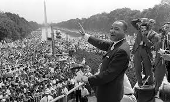
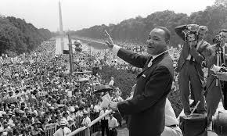
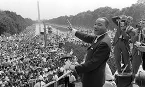

Készítette: [DávidBenjamin]
King a nem erőszakos ellenállás híve volt, és ennek jegyében vezette a polgárjogi mozgalmat. Az ő vezetésével a fekete közösség számos békés demonstrációt szervezett az egyenlőségért.
King "I Have a Dream" beszéde, amelyet a Washingtoni menet során mondott el, az egyik legismertebb polgárjogi beszéd. Itt hirdette meg álmát egy olyan társadalomról, ahol minden ember egyenlő.
King beszédei és tevékenységei alapvető változásokat hoztak az amerikai társadalomban, elősegítve a faji megkülönböztetés megszüntetését.
| Év | Eredmény |
|---|---|
| 1964 | Polgárjogi Törvény |
| 1965 | Szavazati jogok törvénye |
